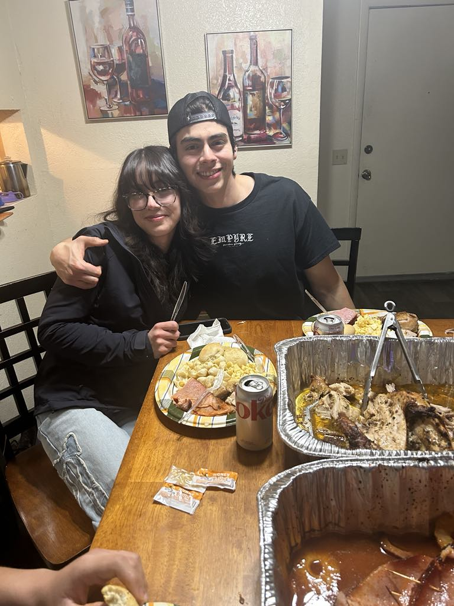

Angel's Resume
Hello, below is a résumé of my work experience and accomplishments. Enjoy!

Inventory Control Specialist at LACO Technologies
- Manage inventory control systems using ABAS ERP software to maintain optimal stock levels of parts and supplies,
ensuring smooth production operations and accurate inventory tracking.
- Execute detailed quality control processes and maintain meticulous documentation for warehouse inventory accuracy.
- Implement and maintain organizational systems to optimize warehouse efficiency and safety standards.
- Collaborate effectively with engineering teams and cross-functional stakeholders to align production goals and
streamline workflow processes
- Coordinate timely delivery of critical components to production areas, supporting continuous manufacturing operations.
- Drive operational excellence through efficient time management and proactive workflow optimization.
Sales Associate at Max Health and Nutrition
- Provide expert guidance on nutritional supplements to diverse clientele, maintaining consistent follow-up to ensure
customer satisfaction and achieve their health objectives.
- Build and nurture long-term client relationships through personalized service and demonstrated product knowledge,
resulting in increased customer retention.
- Conduct thorough needs assessments to deliver tailored supplement recommendations, while maintaining transparency
about expected outcomes and educating clients on proper product usage.
- Revitalized underperforming retail location through strategic product placement and enhanced customer engagement
strategies, resulting in significant sales growth and improved store performance.
Skills
- Effective Communication
- Leadership
- Time Management
- Computer Literacy
- Bilingual English/Spanish
- Full Stack Web Development(UNDER CONSTRUCTION)
My Life Mission and Values
I am an energetic professional who combines creative problem-solving with a positive, can-do attitude to achieve meaningful
results. My natural enthusiasm and collaborative spirit help me build strong relationships while delivering excellent work.
Whether mentoring teammates or tackling complex challenges, I bring both optimism and disciplined execution to every project,
inspiring others to reach their highest potential.
Education
- Currently Enrolled in Salt Lake Community College for Computer Science and Technologie
- Completed Web Development Courses in Udemy
- Completed GED at Salt Lake Community College
Thanks for looking, have a nice day!
Contact